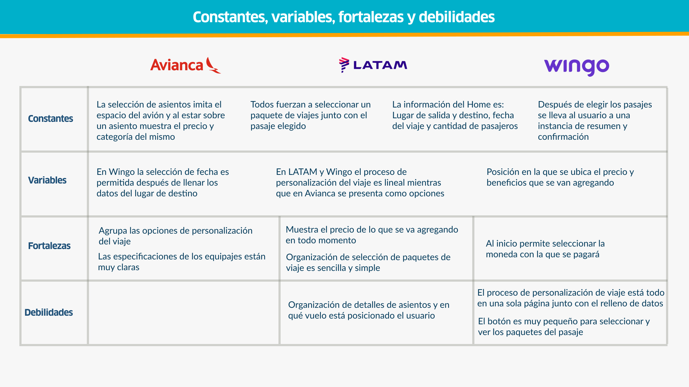
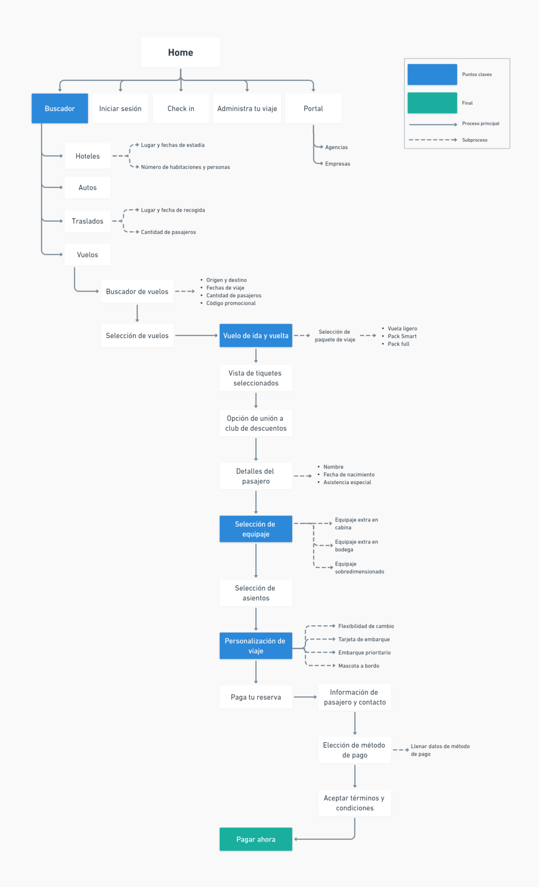
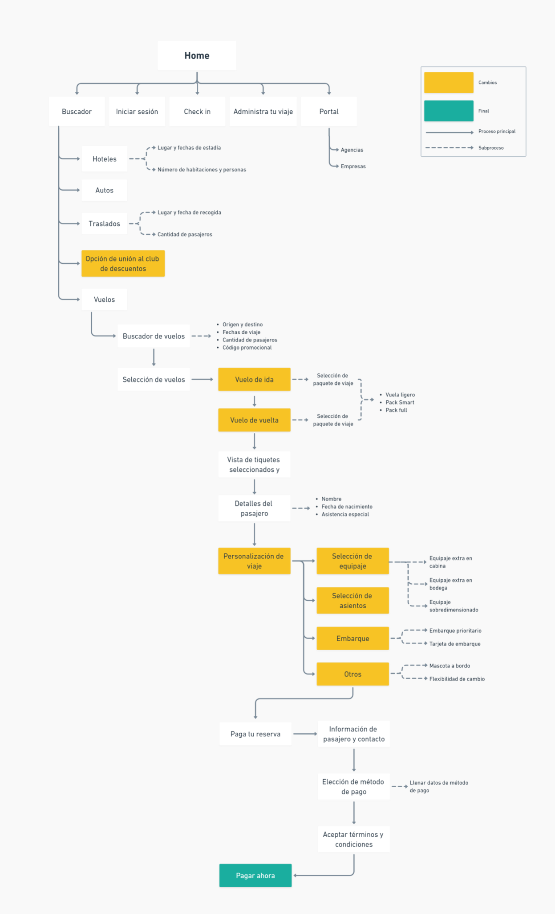

Contexto
6M
Visitas mensuales
37.1%
tasa de rebote
#3
Viajes Argentina
0%
Lo recomendarían
¿Por qué rediseñar?
Un sitio con millones de visitas pero con 37% de rebote y 0% de recomendación entre los encuestados indica un problema estructural grave de experiencia de usuario. El sitio incumplía múltiples heurísticas de usabilidad que afectaban directamente la conversión y la percepción de confianza en la aerolínea.
Problema
Visual y estructural
Vuelos mezclados
Ida y vuelta en una misma pantalla. Los usuarios perdían la referencia de qué vuelo estaban seleccionando en cada momento.
Maletas sorpresa
Equipaje preseleccionado por defecto que aumentaba el precio sin que el usuario lo decidiera. Generaba desconfianza inmediata.
Proceso obligatorio
Personalización lineal y larga que forzaba al usuario a pasar por todos los pasos sin poder saltear lo que no necesitaba.
Home sobrecargada
Demasiado contenido compitiendo por la atención. El buscador de vuelos (la función principal) se perdía entre imágenes y texto.
Botones inconsistentes
Sin estilo predeterminado. En algunos casos no era reconocible qué era un botón y qué no.
Asientos confusos
Demasiada información en la selección de asientos. Los usuarios describían la experiencia como confusa y abrumadora.
"Hay demasiada información al momento de seleccionar el asiento y confunde y aturde." — Usuario encuestado
Encuesta y benchmarking
12 encuestados · 18–40 años
Prioridades del usuario al comprar
1. Comodidad · 2. Seguridad · 3. Precio · 4. Ofertas. Los usuarios esperan simplicidad: un proceso claro donde el precio final sea predecible y el flujo no los sorprenda negativamente.
Avianca · LATAM · Wingo
3 aprendizajes del benchmarking
1. Información desplegable reduce carga visual (Avianca).
2. Detalle de compra visible en todo momento genera confianza (LATAM).
3. Servicios adicionales breves permiten decisiones rápidas (Wingo)

Arquitectura
Arquitectura de la información web actual

Arquitectura de la información propuesta

4 tareas evaluadas
Las 4 mostraron mejoras en la arquitectura propuesta respecto a la actual.
Pago — sección más intuitiva
Fue la tarea con mejores resultados y mayor acierto entre los usuarios del tree testing.
Tarjeta de embarque
Requirió reubicación, los usuarios no la encontraban en su posición original.
Decisiones de diseño
Antes
Vuelo de ida y vuelta en una misma pantalla
Después
Ida en una pantalla, vuelta en otra, claridad total en cada elección
Antes
Personalización lineal obligatoria: el usuario debe pasar por todo
Después
Sección unificada donde el usuario elige qué quiere personalizar
Antes
Maletas preseleccionadas que aumentan el precio sin aviso
Después
Selección limpia de equipaje, sin preselección, precio siempre visible
Antes
Botones inconsistentes: difícil identificar qué es clickeable
Después
Sistema de botones con 5 variantes documentadas en el design system
Design System
Tipografía + paleta
Clan Pro + Lato · 5 colores base
Clan Pro para títulos (limpia y moderna). Lato para cuerpo de texto. Paleta con primarios de marca (#0F446C azul + #BC2133 rojo), neutros y colores semánticos para estados de error, advertencia y éxito.
UX writing
Reglas para cada tipo de texto
Botones: una sola palabra, sin puntuación. Errores: máximo un renglón, no juzgantes. Confirmaciones: cortas, amigables, pueden usar signo de exclamación. Precios: siempre con símbolo $ y tipo de moneda en el total.
Testeo de usabilidad e iteración
3 usuarios · Remoto moderado · 15 min por sesión · 4 tareas
Lo que funcionó
Lo que no funcionó → acción